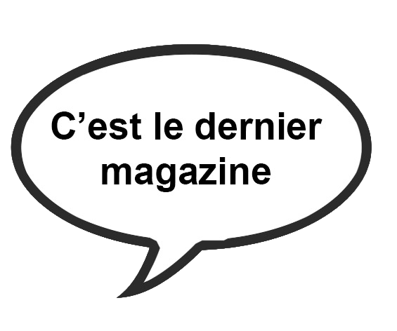

2025 - Mélody reprend le flambeau
2020 - Année du COVID… et 20 ans de Mélody
2017 - Info-Mille n°2. Dernière parution
2017 - Emilie a créé le magazine Info-Mille
Novembre 2016 - Nouvelle version de Texhebdo mais vite abandonnée
Mars 2016 - tous au carnaval
2007 - Anniversaire de mariage de Papy et Mamy... Il manque le Texhebdo
2003 - A la recherche du Texhebdo 2003
2015 - David fait ses classes mais hélas le Texhebdo a disparu
Le premier numéro. Marina s'est lancée dans cette aventure